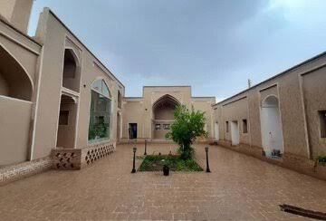
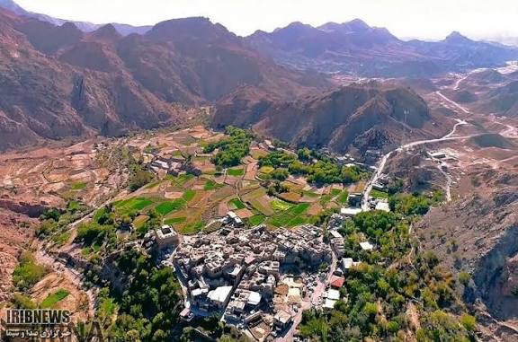
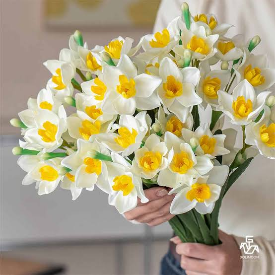
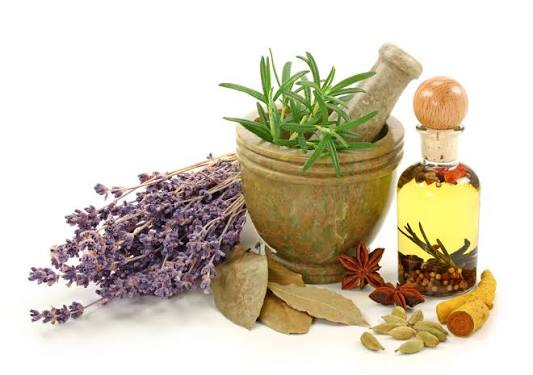
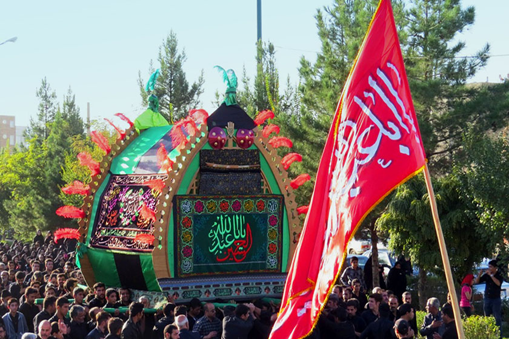
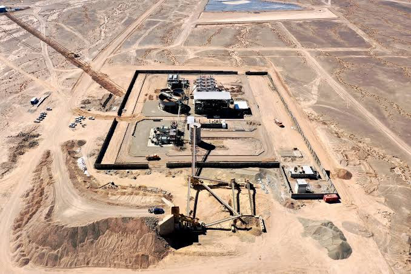
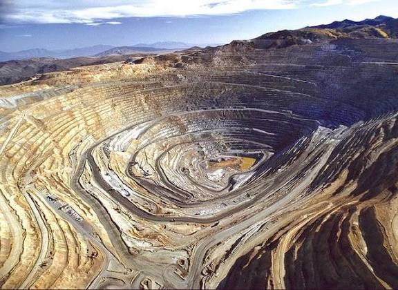

۰۱ / معرفی
معرفی نگین کویر
شهرستان خوسف در استان خراسان جنوبی واقع شده و به دلیل بافت تاریخی و ارزشمند خود شناخته میشود. این شهر در حاشیه کویر لوت قرار دارد. خوسف به شهر گلهای نرگس شهرت دارد و بافت قدیمی آن یکی از زندهترین بافتهای تاریخی ایران است که همچنان نفس میکشد.
✧
KHOOSFIRAN
اماکن تاریخی



اماکن گردشگری


محصولات محلی





آداب و رسوم



معادن طلایی


